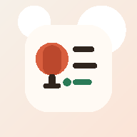

Guide
Voice Inbox
Voice Inbox は、思いついたことを話して、止めたあとに Gemini でまとめて要約とタスク化をするアプリです。リアルタイム文字起こしはせず、最後に一括で整理する形にしています。
使い方
- 最初に設定から Gemini API キーを入れます。
- 録音開始を押して、考えていることをそのまま話します。
- 話し終えたら停止します。
- 整理された要約とタスクを確認します。
- 未完了だけをコピーして、Notion や Keep に貼り付けられます。
このアプリの動き方
- 録音中は API 通信をしません。
- 停止したあとに、音声を Gemini へ 1 回だけ送ります。
- 返ってきた結果から、要約、原文、タスクを表示します。
- タスクや最後の結果、API キー名はブラウザ内に保存します。
- 失敗した録音は保管され、あとから再送信できます。
注意点
- Gemini へ送るため、ネット接続は必要です。
- 1 回の録音は最大で約 6 分です。
- API キーはこのブラウザ内に保存されます。
- スマホで使うときは、Chrome から
v2.htmlを開いてインストールするのがおすすめです。
Firebase 同期の設定
- 個人利用なら、まずは Firebase の Spark プラン前提で始めれば大丈夫です。
- Firebase コンソールでプロジェクトを作成します。
- Authentication で Google ログインを有効にします。
- Firestore Database を作成します。
- Authentication の許可ドメインに
ts-notes.github.ioを追加します。 - Firebase の Web アプリを追加して、表示された
firebaseConfigをコピーします。 - Voice Inbox の設定画面に、その設定を貼り付けて保存します。
- 設定画面の
Google でログインを押すと、タスクと直近結果の同期が始まります。
同期されるもの
- タスクInboxの内容
- 直近の要約
- 直近の原文
同期されないもの
- Gemini API キー
- 保存済み API キー名
- 失敗した録音の保管データ
Firestore ルールの例
rules_version = '2';
service cloud.firestore {
match /databases/{database}/documents {
match /users/{userId}/appState/{docId} {
allow read, write: if request.auth != null && request.auth.uid == userId;
}
}
}
service cloud.firestore {
match /databases/{database}/documents {
match /users/{userId}/appState/{docId} {
allow read, write: if request.auth != null && request.auth.uid == userId;
}
}
}